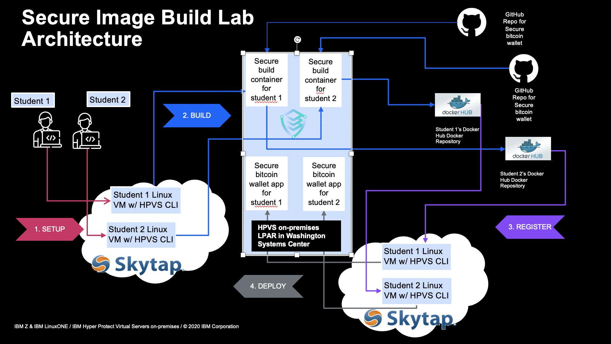
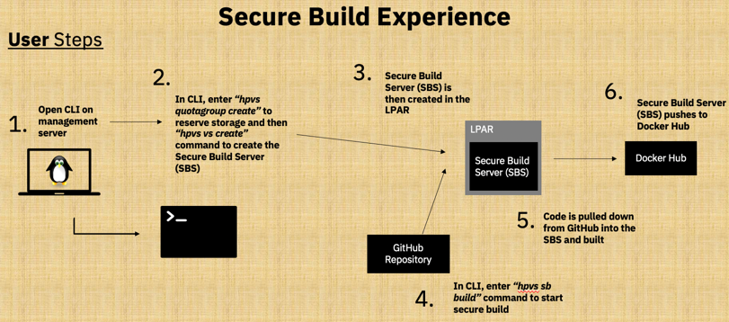
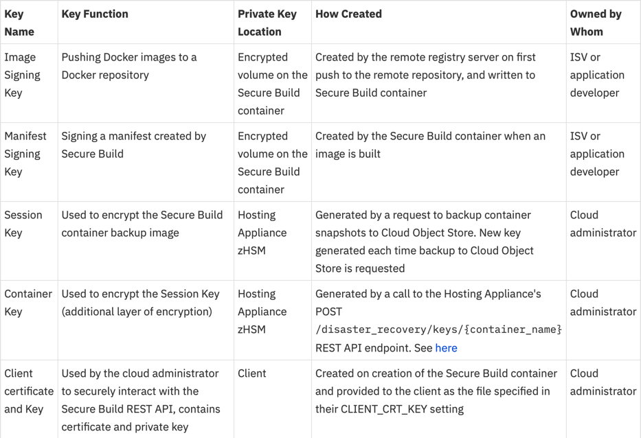
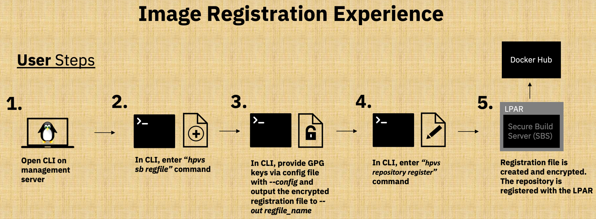
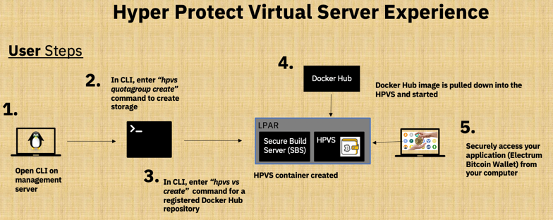

Hyper Protect Virtual Servers (HPVS) Lab Process Overview¶
Prerequisites¶
See the Prerequisites page to complete the prerequisites for this lab. This includes creating accounts and credentials to access the Source Code Management (SCM) GitHub and the Docker Image Management (Docker Registry) Docker Hub for the lab.
The Big Picture¶
Here is a big picture of what is going on in the lab. The different sections of this are explained in more detail in the Detailed Lab Process Section below.

Note
Student 1 and Student 2 in the illustration are 2 example students. In the actual lab, more students will be present.
Detailed Lab Process¶
-
Configure your environment with the necessary credentials to connect to GitHub and Docker Hub respectively. (See
Configuring your Environment) -
Securely Build a Docker Image for the Secure Electrum Bitcoin Wallet Application. (see
Create your HPVS Secure Build ServerandSecurely Build your Application). This uses the Secure Build Process detailed below1:
Info
This secure build process leverages Docker Content Trust to verify images using the Notary service architecture.
Tip
The Secure Build server used is deployed as a Hyper Protect Virtual Server which generates the repository and root keys used to establish trust with the Docker Notary Service. This ensures that the initial keys used for a repository are trusted on first use (solving the TOFU problem). See a detailed example of where all of the keys used for the secure build process are generated below.
Full list of the keys used during the Secure Build and BYOI lifecycle2

-
Register your securely built Docker Image with your Secure Service Container to verify its validity3 (see the end of
Securely Build your Applicationand the beginning ofDeploy your Securely Built Application as a Hyper Protect Virtual Server) . -
Launch your Secure Bitcoin Wallet application
(from the verified repository created in step 3)as a Hyper Protect Virtual Server within its own secure enclave4 (seeDeploy your Securely Built Application as a Hyper Protect Virtual Server). . -
Access your Secure Electrum Bitcoin Wallet Application application to use it with security built-in (see
Welcome to the Secure Bitcoin Wallet on IBM LinuxONE). -
Clean up your environment for future users (see
Clean up your environment).
Let's Get Started!!!¶
-
The
Secure Build Experiencegraphic is adapted from charts provided by the Hyper Protect Virtual Servers On-Premises development team. ↩ -
The above table is provided here for convenience. It comes from the
IBM Knowledge Center↩ -
The
Image Registration Experiencegraphic is adapted from charts provided by the Hyper Protect Virtual Servers On-Premises development team. ↩ -
The
Hyper Protect Virtual Server Experiencegraphic is adapted from charts provided by the Hyper Protect Virtual Servers On-Premises development team. ↩